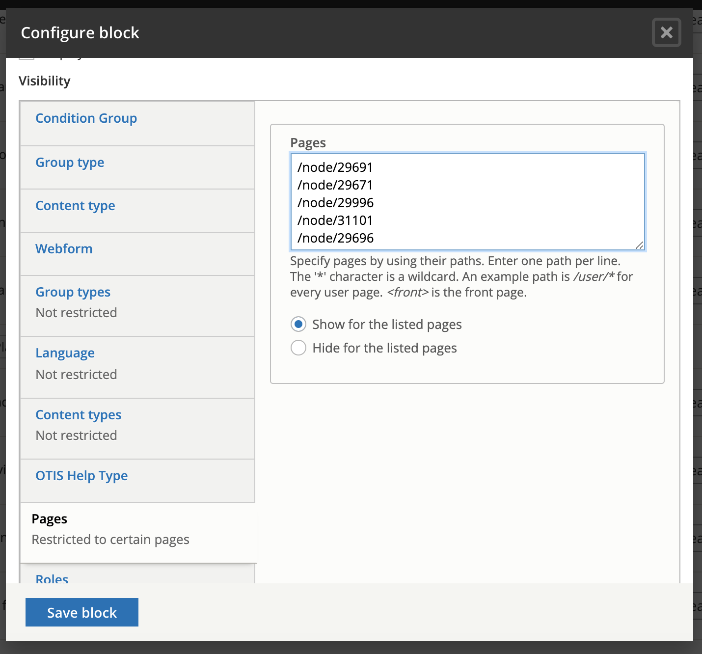

Configuring blocks
By default blocks are:
shown on every page
shown in every language
shown for every user
These settings can be changed per block and can be combined (for example, I can create a block that appears only on the Spanish divorce easy form for legal aid members)
Language
To limit to a specific language, click on the language tab and check the languages of pages that the block should appear on. For example, if you click on Spanish, then the block will only appear on pages that start with illinoislegalaid.org/es.
Note
This has no bearing on whether a translation exists. If a block is not translated but tagged to all languages, the English block will appear.
Pages & Content types
Blocks can be set to be visible or hidden per content type (legal content, basic page, job posting, etc) or per page or page paths. Examples:
/node/29671 will cause a block to appear only on that page or on every page but that page depending on the show/hide settings
/about/* will cause a block to appear on every page that starts with /about/
/get-legal-help will cause the block to appear on the get-legal-help page but not any child pages.
Roles
Blocks can be set to be visible for specific roles. Keep in mind:
the block will be visible if the user has any of the selected roles. For example, staff users also have the legal aid member role so a block set to be visible for legal aid members will be visible to staff users even if the staff role is not set
authenticated users means any logged in user
anonymous users means any not logged in user